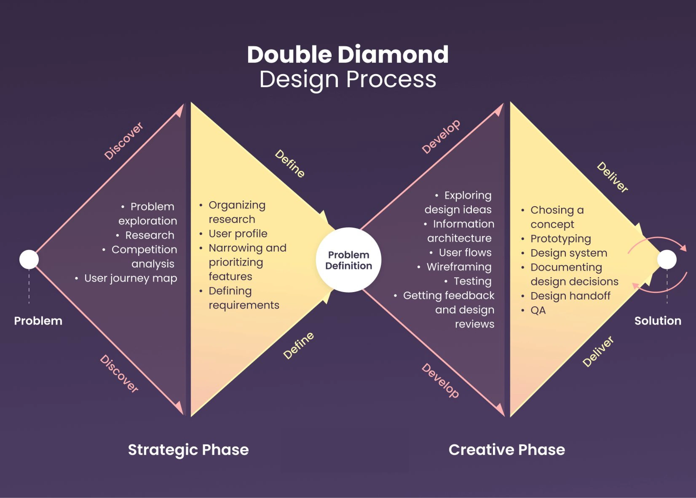
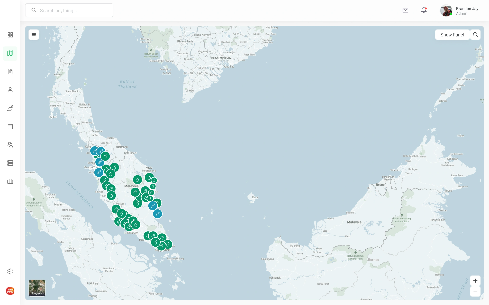
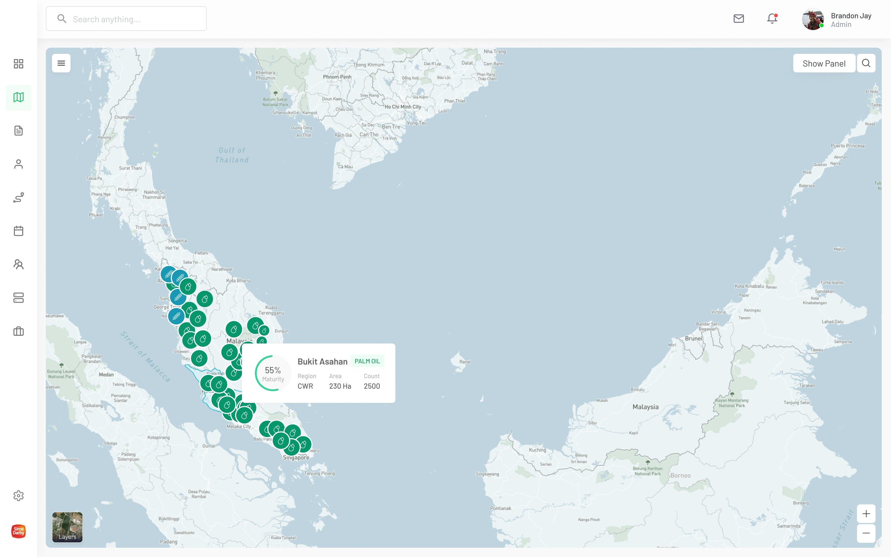
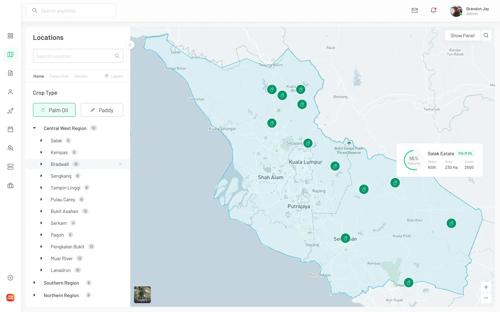
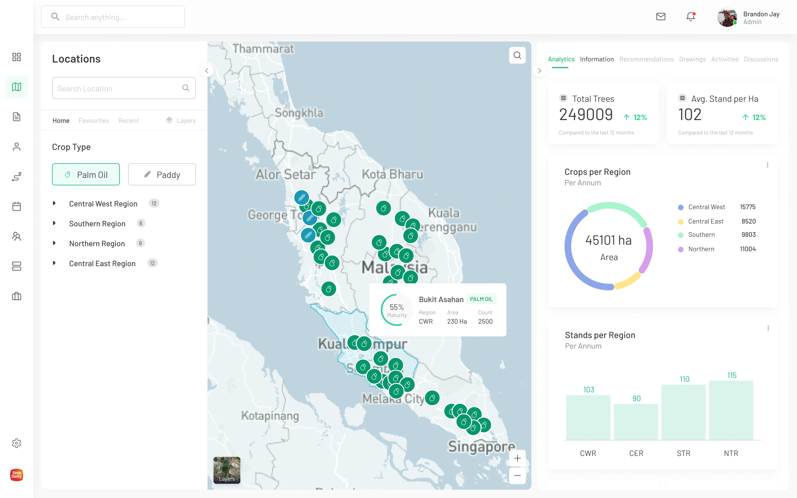
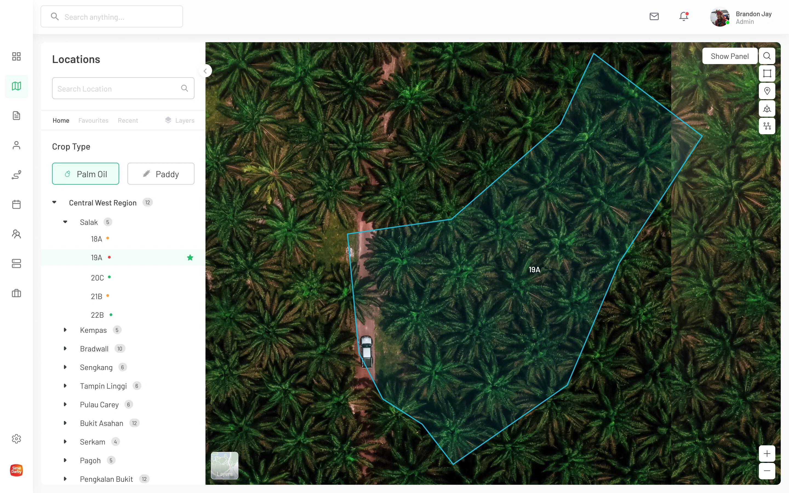
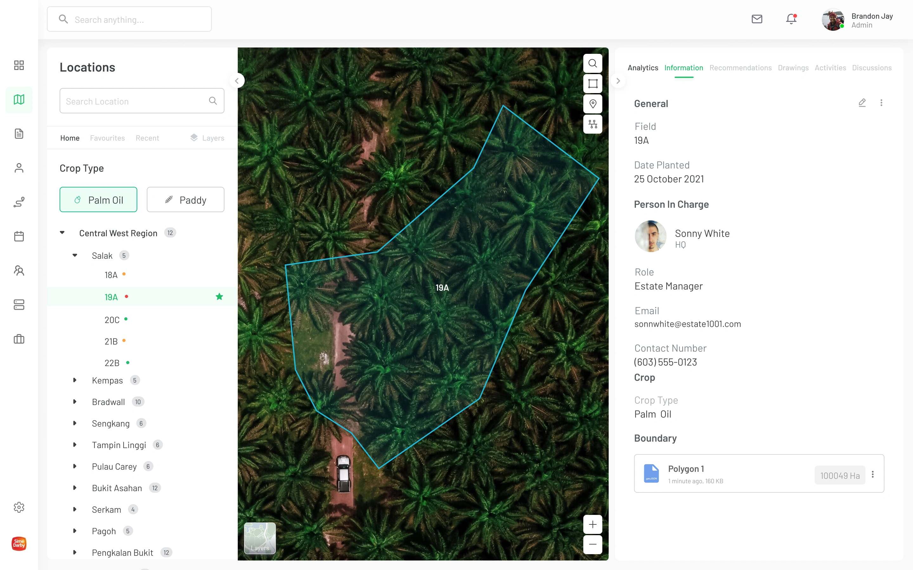
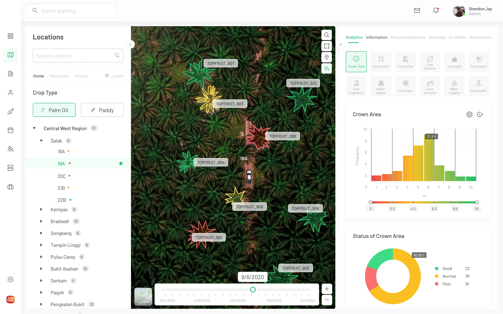
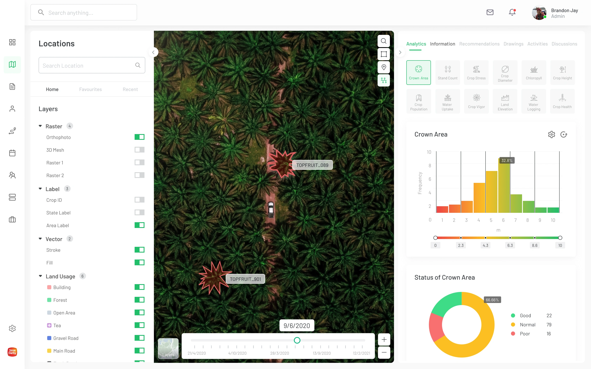
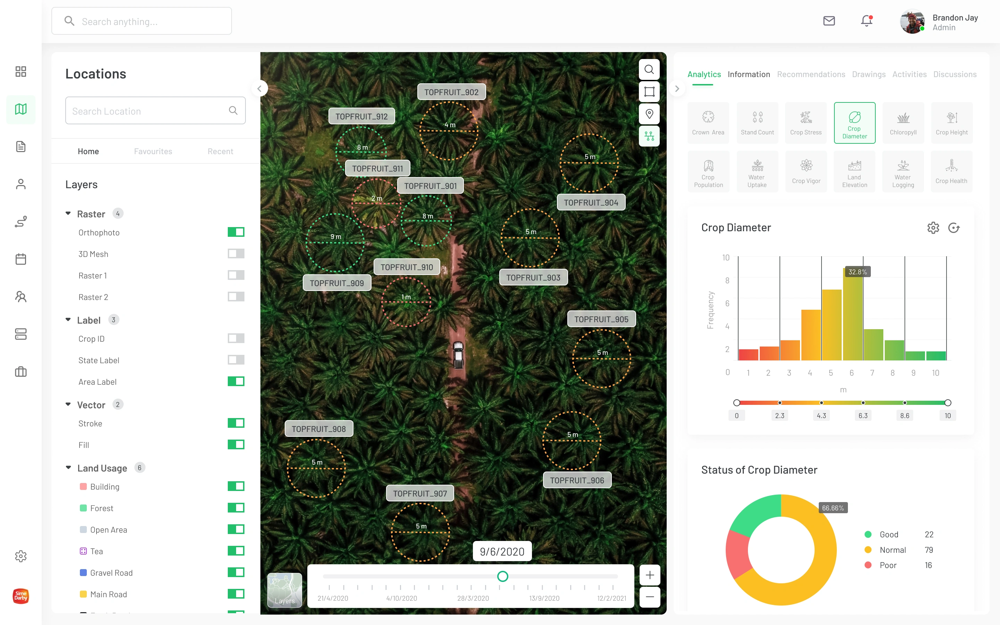

Project Overview
The Agrimor SuperApp is a platform that connects farmers, agencies, and agriculture service providers with drone pilots to facilitate tasks like seeding, spraying, plant analysis, mapping, and more. By leveraging drones and IoT technology, the app aims to boost crop yields and profitability, while minimizing the use of traditional resources like land, water, and fertilizers. This case study outlines the UI/UX process behind the development of this innovative app, which helps farmers implement precision agriculture practices, reducing their input and maximizing their outputs.
Project : Agrimore Sector : Drone Technology(Saas) Role : UX UI Designer Timeline : 6 Months
Problem Statement
- Farmers rely heavily on traditional resources such as land, water, fertilizers, herbicides, and insecticides, which are becoming increasingly costly.
- The process of hiring drone pilots for agricultural tasks is manual, time-consuming, and lacks a centralized platform for seamless interaction.
- Farmers do not have access to real-time, actionable data that could help them make informed decisions to increase yields while reducing input costs.
- Farmers are looking for ways to increase profitability while managing high input costs, yet they lack efficient, tech-driven solutions
Design Process

Key Features
Enhance Efficiency
- Simplify the process of requesting agricultural services, such as seeding, spraying, and mapping, with drones and pilots.
Reduce Resource Usage
- Minimize inputs like land, water, fertilizers, herbicides, and insecticides through the use of precision agriculture.
Promote Profitability
- Help farmers increase yields and profitability using cutting-edge technology, reducing operational costs.
Improve Accessibility
- Design an easy-to-navigate app that caters to tech-savvy and non-tech-savvy farmers alike.
Facilitate Data-Driven Farming
- Provide farmers with actionable data and insights via drones and IoT integration..
Generate Report
- Generate details reports for each yield. which provides precious agricultural in future.
Visual Designs








